GitLab以代码为中心的软件生命周期
AgenticOps 方法论
同一套 AgenticOps 双环，贯通组织型生产与个人 OPC
AgenticOps 生命周期
组织与个人 OPC 共享同一控制层


本页只讲 AgenticOps 方法论，不拆分产品线04
OPEN BY DESIGN. AI UNDER YOUR CONTROL.
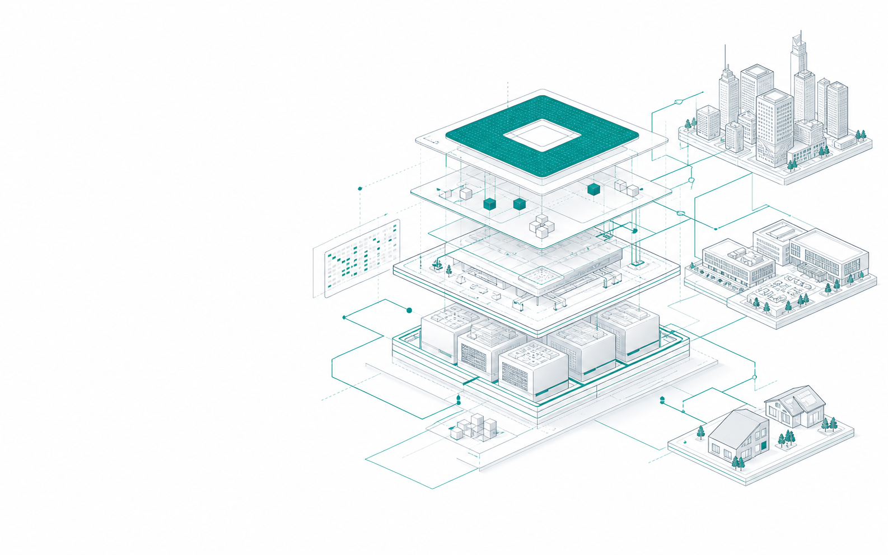
模型能力每天变化，企业既要在自身数据与算力边界内持续升级，也要让 Agent 真正进入业务流程而不中断生产。
以 300 万+社区用户和 20 万+模型资产为入口，把开放资产、企业治理、Agent 生产与持续运营连接成一套系统。
终端客户覆盖米哈游、B 站、宁德时代、中航锂电等；三年连续翻倍增长，持续保持净利润与净现金流。
上海、重庆、盐城、东方、宜昌等城市站点可持续孵化个人 OPC，并联动基金会、产业基金和开发者生态向全国复制。
开放协作让代码仓库成为全球开发者网络。
GITHUBGitHub 用户超过 200 万、代码库超过 300 万，验证社区分发与开发者网络效应。
COMMUNITYGitLab 获得大量企业客户，验证“开放获客 + 私有部署 + 企业控制”的 OpenCore 路径。
GITLABHugging Face 转向开源 AI 社区；微软以 75 亿美元收购 GitHub。
AI ASSETSGitLab 上市市值约 148 亿美元，证明开源分发与企业软件可同时规模化。
OPENCOREHugging Face 连接超 100 万个资源库和 1 万家客户，以 45 亿美元估值融资 2.35 亿美元。
MODEL HUB以 300 万+用户和 20 万+模型为入口，生命周期扩展到资产、Agent、治理、运营与持续进化。
3M+ USERS · 200K+ MODELS组织与个人 OPC 共享同一控制层
北京开放传神科技有限公司成立于 2023 年 3 月，同年 10 月正式运营。公司聚焦 AI 主权基础设施，让组织在模型、数据、算力与智能体四个层面拥有自主、可控、可演进的 AI 能力。
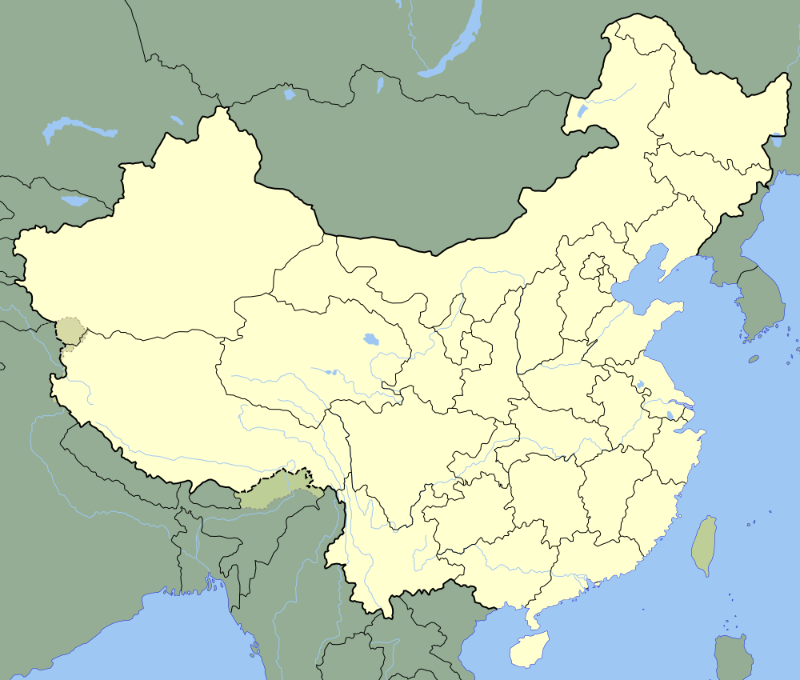
上海 盐城 宜昌 重庆 乐山 东方 香港 新加坡内地城市节点 · 香港国际入口 · 新加坡与东南亚连接
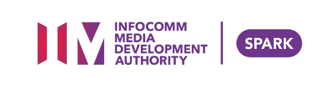
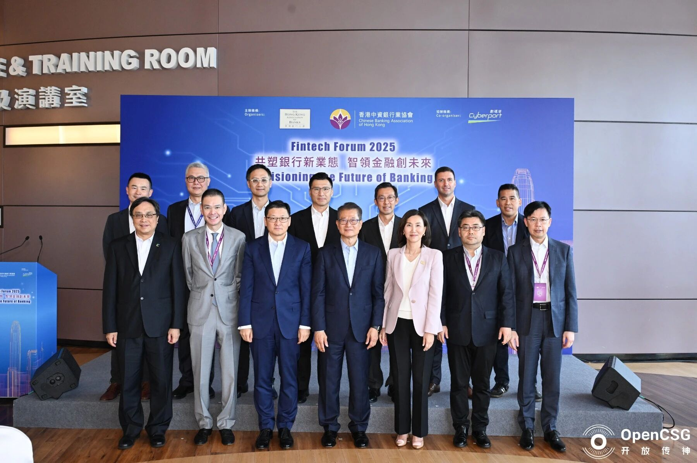
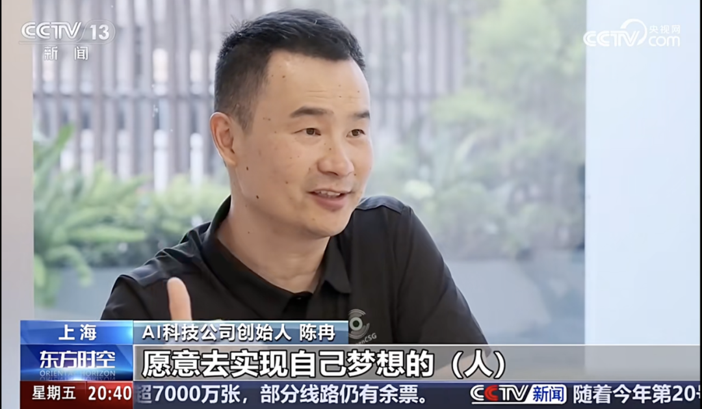
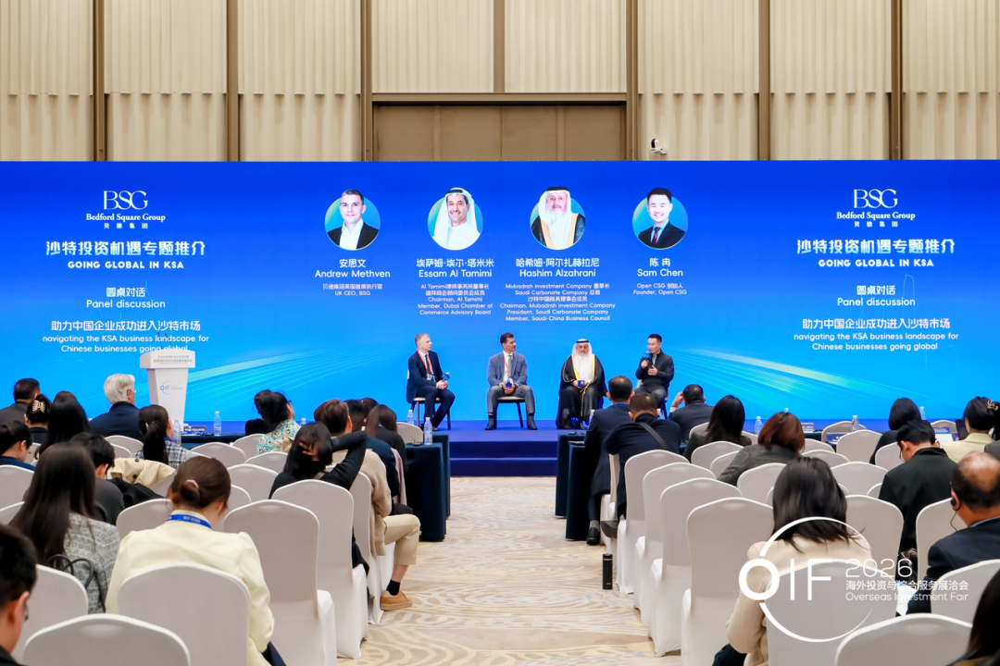
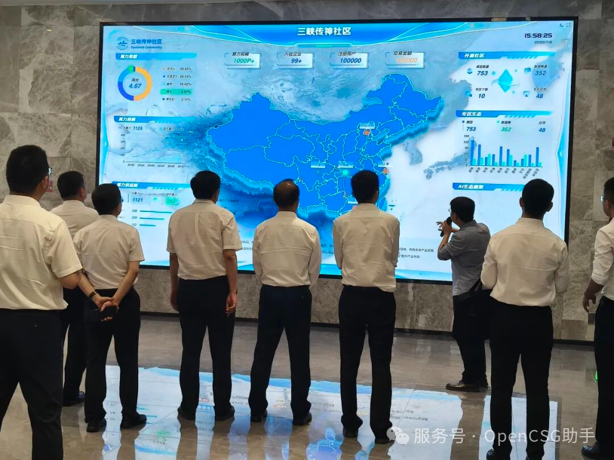
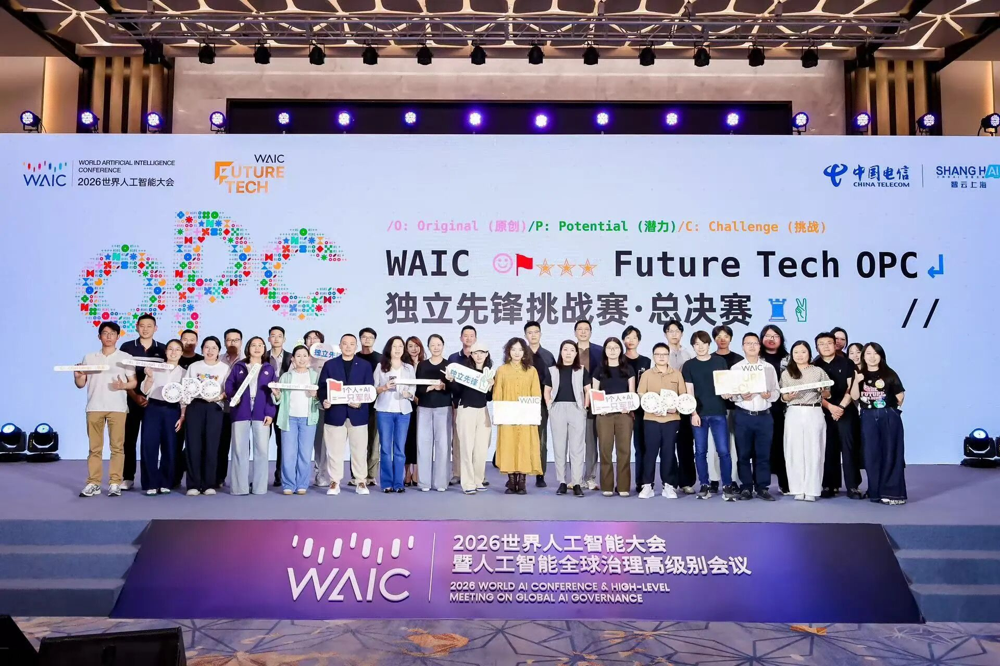
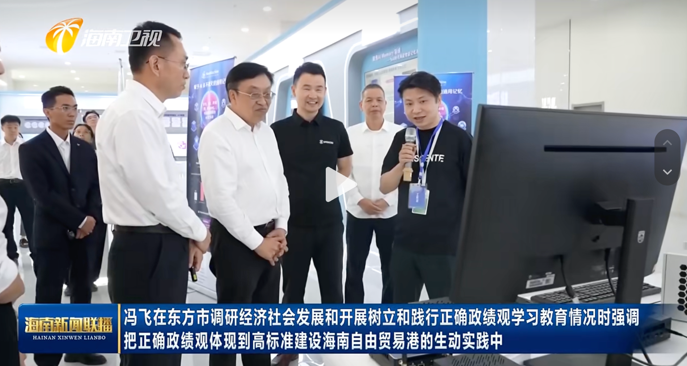
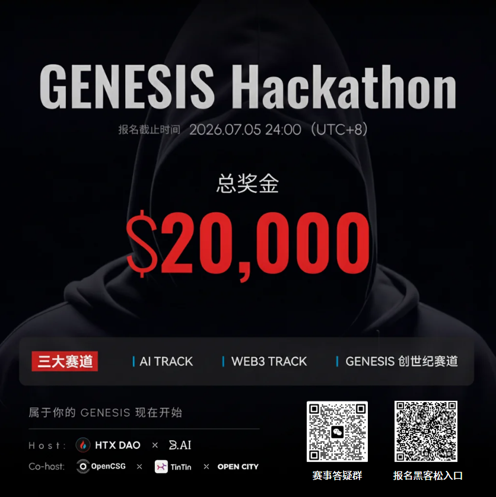
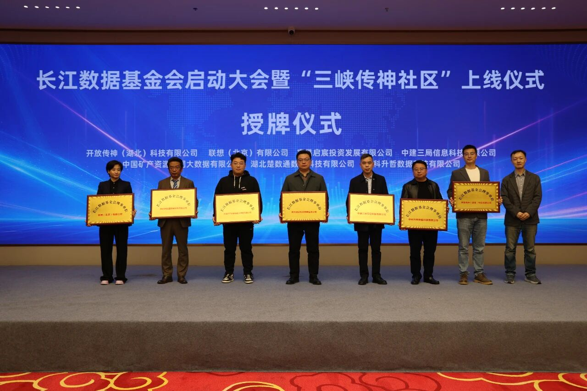
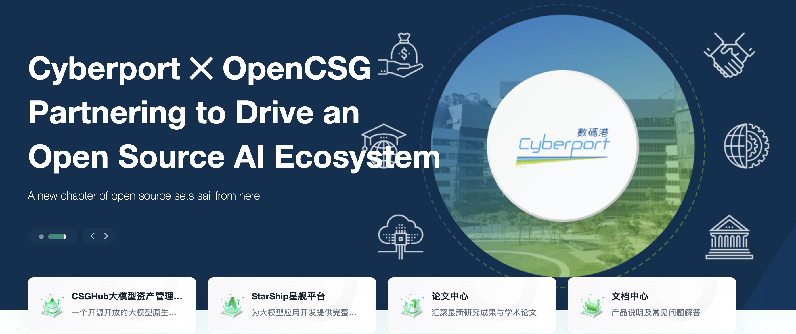
企业需要控制、治理、私有化托管和可靠的生产部署，而不是另一个孤立的模型接口。
OpenCSG 统一管理 AI 资产、批准模型、私有 Copilot 和受治理的 Agent 工作流，支持公有云、私有云、本地与主权环境。
治理、安全与持续运营。
模型、数据、Prompt、代码、MCP 与 Agent。
私有云、本地与隔离环境。
构建、发布、监控与持续进化。
开放灵活性叠加权限、审计与控制。
总部 SaaS 无法满足本地数据边界与持续运营。
以自部署 AgenticOps 控制层统一模型、权限与发布。
数据、模型和实验过程分散在个人环境。
统一资产图谱、评测、沙箱与发布流程。
算力、模型、数据和开发者彼此割裂。
以开放资产、开发者门户和运营体系串联生态。
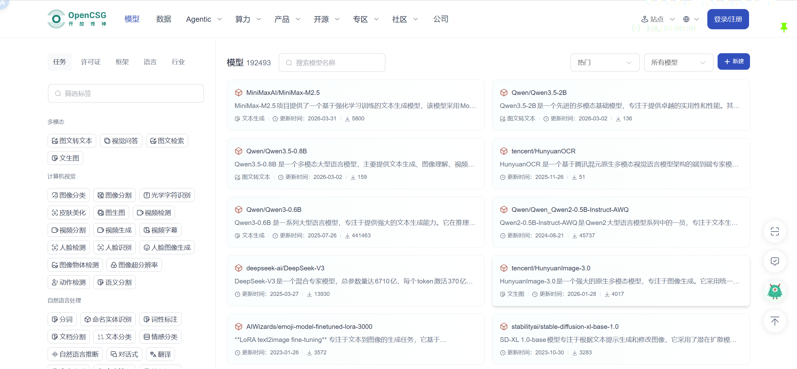
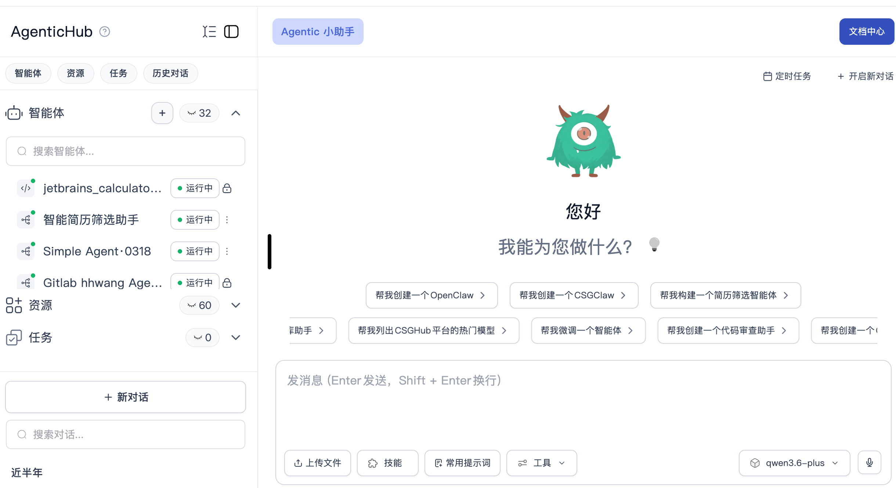
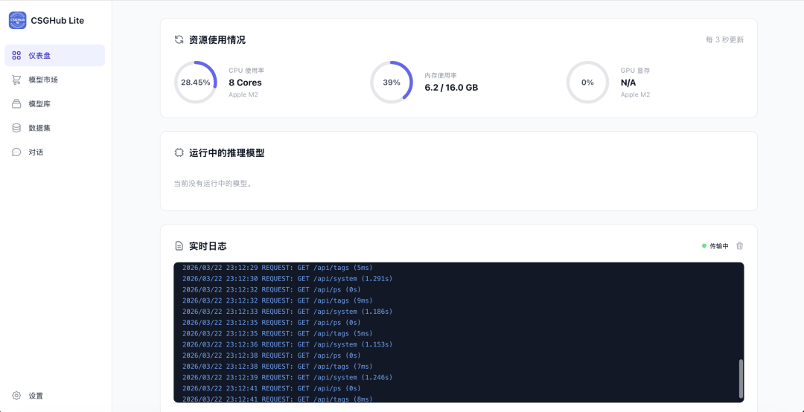
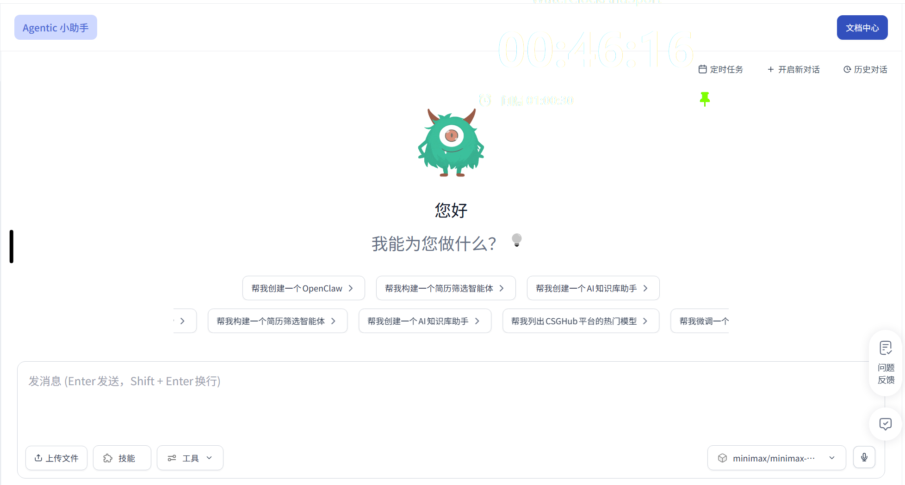
图像 · 视频 · 点云 · 传感器 · 用户交互
云端 · 本地 · 边缘 · 隔离环境
不绑定单一芯片组织已在至少一个业务职能中常态化使用 AI。
McKinsey｜The State of AI in 2025: Agents, Innovation, and Transformation正在试验或规模化 Agent，其中 23% 已开始扩展。
McKinsey｜The State of AI in 2025: Agents, Innovation, and Transformation截至 2025H1 中国备案大模型数量，覆盖 30+ 行业。
国家发展改革委｜以技术持续创新支撑“人工智能+”行动加速落地中国 2027 年新一代智能终端、智能体应用普及率目标。
国务院｜关于深入实施“人工智能+”行动的意见（国发〔2025〕11号）多模型资产、版本、评测、发布、成本和 SLA 必须持续运营。
公共算力、模型与生态需要自主部署、持续运营和区域复制。
Lineage、RBAC、Audit、Policy 与数据边界必须内建。
30,000 家目标组织 × $150K 年均 ACV
300 个平台 × $10M 全生命周期价值
口径：软件 License、私有化实施、持续运营与生态服务；为 OpenCSG 基准情景假设，不是第三方市场预测。
GitHub 开发者，开源个人 AI 最直接的全球分发入口。
GitHub｜Octoverse 2025: A New Developer Joins Every SecondGitHub AI 项目，Agent、Skill 与本地运行组件快速积累。
GitHub｜Octoverse 20252026 年 AI PC 预计出货量，本地推理成为标准硬件能力。
Gartner｜AI PCs Will Represent 31% of Worldwide PC Market by End-20252026 年 AI PC 占全球 PC 市场预测比例。
Gartner｜Worldwide AI PC Share and Shipments 2024–2026一次性问答
无长期状态
私有知识
长期上下文
模型、数据、权限
留在本地
连接工具
持续执行任务
分工、协同、复盘
个人生产系统
Repo、核心功能、Issue 与版本节奏公开，降低试用和信任成本。
开发者、模型、数据、Prompt 与 MCP 持续进入同一生态。
推理、数据处理、可靠性、企业集成、安全和组织治理形成付费边界。
企业 License、实施、升级、SLA 与专家支持形成持续收入。
开源版本与企业版本不割裂，升级路径连续。
增强模型推理、数据处理、平台可靠性与企业集成。
满足后台管理、权限、安全、审计与自主部署需求。
基于 License、实施与支持服务形成收入。
一条命令启动，完整保留本地模型、数据与 API 控制权。
自托管部署，统一管理模型、数据、代码、应用、Prompt 与 MCP。
继承社区版全部能力，并增强计算、组织治理、商业运营和高可用。
公开 AI Hub 帮助开发者发现并试用模型；OpenCSG 帮助企业在安全生产环境中托管、管理、治理并部署模型、数据集、Prompt、代码、应用和 AI Agent。
发现与分发
API、推理与性能
应用与工作流
模型下载与 Runtime
代码与软件生命周期
资产 → Agent → 运营 → 治理
不只是模型发现。
不只是公共访问。
贯通资产、Agent、部署与运营。
云端、本地、边缘和隔离环境；兼容国产芯片、GPU、CPU 与异构算力池；模型、Agent 与治理层不绑定硬件，企业可替换算力供应商。
模型中立，具备权限、审计与可观测性。
极狐 GitLab 前创始人 CEO，长期专注开源、企业软件与商业化路径。
华中科技大学硕士；历任 HP、D2iQ，创办并领导极狐 GitLab；熟悉社区分发、OpenCore 与企业采购。
从 AI 资产社区切入，持续把产品推进至企业治理、Agent 运行、区域平台和个人 OPC。
在开发者生态、企业客户、政府平台、产业伙伴与资本之间建立共同产品语言。
首席架构师 · 中科大
Amazon / 昆仑经历
研发负责人
平台工程与交付
产品负责人 · 清华
腾讯产品经历
公司治理
投资与 AI 产业经验
私有部署、升级与支持；按用户、团队与 Agent 持续扩容。
建设费、年度运营，以及算力、模型与 Agent 服务贯穿全生命周期。
个人订阅、边缘授权、算力交易、硬件合作与 Agent / Skill 交易抽佣。
来源：OpenCSG 2026–2028 盈利预测模型。本页仅展示指数、同比与结构占比，不披露绝对收入金额。